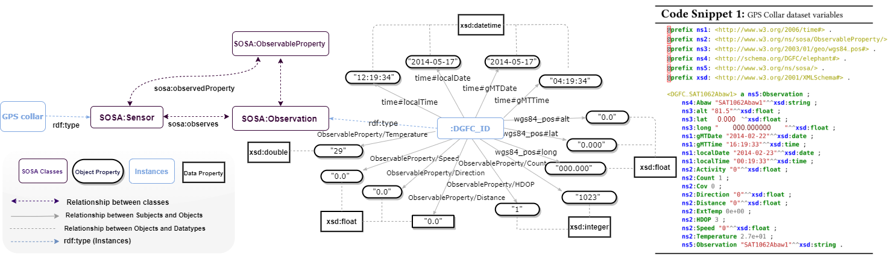

Animal GPS Collars Data#
The Danau Girang Field Centre (DGFC) https://www.dgfc.life/home/ provided us with the collars data for elephants. Collars weighing approximately 14 kg each were officially placed around the elephants’ necks to record numerous metrics every two hours, including time, geolocation, and temperature. In this study, we modelled twenty-two adult Asian elephants (Elephas maximus), fourteen females and eight males. The collars were created by Africa Wildlife Tracking and fitted ethically by a team of researchers, trackers, and a wildlife vet. Each collar had a Global Positioning System (GPS) receiver and a Very High Frequency (VHF) transmitter. At predetermined intervals, the GPS uploaded each individual’s geographical location information to the Globaltrack server, which could be officially obtained from the Globaltrack website (http://www.globaltrack.com). The built-in VHF transmitter aided in retrieving collars that had come off naturally or in locating an individual when additional monitoring was required. The observations in those datasets cover the period range between 2012 to 2018. We refrain from publishing the datasets used in this study because they could be misused to locate an endangered species at risk of poaching.

#GPS Collar RDF Transformation Pipeline#
import pandas as pd #for handling csv and csv contents
from rdflib import Graph, Literal, RDF, URIRef, Namespace #basic RDF handling
from rdflib.namespace import FOAF , XSD, SSN, SOSA #most common namespaces
import urllib.parse #for parsing strings to URI's
import matplotlib.pyplot as plt
import plotly.graph_objects as go
import plotly.express as px
import stardog
df = pd.read_csv('Jasmin.csv')
df['Altitude']= pd.to_numeric(df['Altitude'],errors='coerce')
df['Altitude'].mean().round(6)
g = Graph()
ID = Namespace('DGFC_')
SOSA = Namespace('http://www.w3.org/ns/sosa/')
lat = Namespace('http://www.w3.org/2003/01/geo/wgs84_pos#')
long =Namespace('http://www.w3.org/2003/01/geo/wgs84_pos#')
alt = Namespace('http://www.w3.org/2003/01/geo/wgs84_pos#')
UNIT= Namespace('http://qudt.org/vocab/unit')
schema = Namespace('http://schema.org/')
uri=URIRef('http://www.w3.org/2000/01/rdf-schema#')
OBSPRO= Namespace('http://www.w3.org/ns/sosa/ObservableProperty/')
TIME = Namespace('http://www.w3.org/2006/time#')
VOID = Namespace('http://rdfs.org/ns/void#')
XMLNS = Namespace('http://www.w3.org/XML/1998/namespace')
for index, row in df.iterrows():
g.add((URIRef(ID+row['ID']), RDF.type, SOSA.Observation))
g.add((URIRef(ID+row['ID']), SOSA.Observation, Literal(row['ID'], datatype=XSD.string)))
g.add((URIRef(ID+row['ID']), URIRef(schema+'DGFC/elephant#Jasmin'), Literal(row['ID'], datatype=XSD.string) ))
g.add((URIRef(ID+row['ID']), TIME.localDate, Literal(row['LocalDate'], datatype=XSD.date)))
g.add((URIRef(ID+row['ID']), TIME.localTime, Literal(row['LocalTime'], datatype=XSD.time)))
g.add((URIRef(ID+row['ID']), TIME.gMTDate, Literal(row['GMTDate'], datatype=XSD.date)))
g.add((URIRef(ID+row['ID']), TIME.gMTTime, Literal(row['GMTTime'], datatype=XSD.time)))
g.add((URIRef(ID+row['ID']), lat.lat, Literal(row['lat'], datatype=XSD.float)))
g.add((URIRef(ID+row['ID']), long.long, Literal(row['long'], datatype=XSD.float)))
g.add((URIRef(ID+row['ID']), OBSPRO.Temperature, Literal(row['Temperature'], datatype=XSD.double)))
g.add((URIRef(ID+row['ID']), OBSPRO.Speed, Literal(row['Speed'], datatype=XSD.float)))
g.add((URIRef(ID+row['ID']), alt.alt, Literal(row['Altitude'], datatype=XSD.float)))
g.add((URIRef(ID+row['ID']), OBSPRO.Direction, Literal(row['Direction'], datatype=XSD.float)))
g.add((URIRef(ID+row['ID']), OBSPRO.Distance, Literal(row['Distance'], datatype=XSD.float)))
g.add((URIRef(ID+row['ID']), OBSPRO.HDOP, Literal(row['HDOP'], datatype=XSD.integer) ))
g.add((URIRef(ID+row['ID']), OBSPRO.Cov, Literal(row['Cov'], datatype=XSD.integer) ))
g.add((URIRef(ID+row['ID']), OBSPRO.Count, Literal(row['Count'], datatype=XSD.integer) ))
# print(g.serialize(format='turtle')).head(10)
# saving RDF graph to disk
g.serialize("Jasmin.rdf", format="ttl")
# adding serialized data to stardog
conn_details = {
'endpoint': 'http://localhost:5820',
'username': 'admin',
'password': 'admin'
}
with stardog.Admin(**conn_details) as admin:
Jasmin = admin.new_database('Jasmin')
conn = stardog.Connection('Jasmin', **conn_details)
conn.begin()
conn.add(
stardog.content.File('Jasmin.rdf', stardog.content_types.TURTLE),
)
conn.commit()